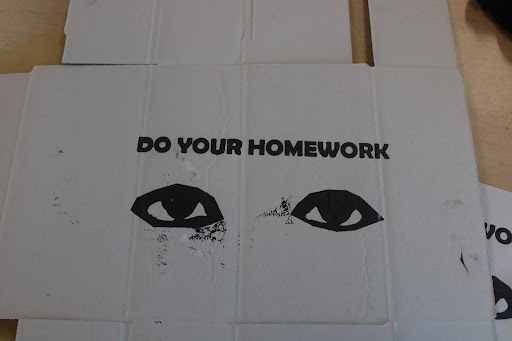

During the project, I chose the message ‘Do your homework”. I first drew it on a piece of paper, then I made other shots of it and eventually, a recording. I then assembled it on a frame, I cut 4 pieces of wood and glued and stabled them together, and eventually, I stabilized the mesh, then I printed out the message, I placed it on the frame, and I ironed it until it stuck to the frame, then at last I painted it. This project taught me how to launch photos from a camera into a computer, I also learned how to convert Psds into images that can be uploaded.
The skill I learned the most from this project is communication and collaboration. This skill was what the whole project was about, we communicated about how to do the steps of the project at the fastest and highest quality rate. We had to glue and stable wood together, and we had to stable mesh, a frame, and we printed, and did painting. We decided to help others do the assembly. One person held the project together while another did the stabling, and another person brought the necessary tools. We did this well and efficiently. However, one challenge was that there was not enough materials for all of us, so we decided to overcome this by doing different steps. For example, if one person did Ironing, the other did painting, if one person took photos, the other did recording. If we worked solo, we would do worse, because we would have nobody to help us aside from the teachers who have plenty of students to help, we would be waiting too much and would get little done during the waiting.

describe this image here

describe this image here